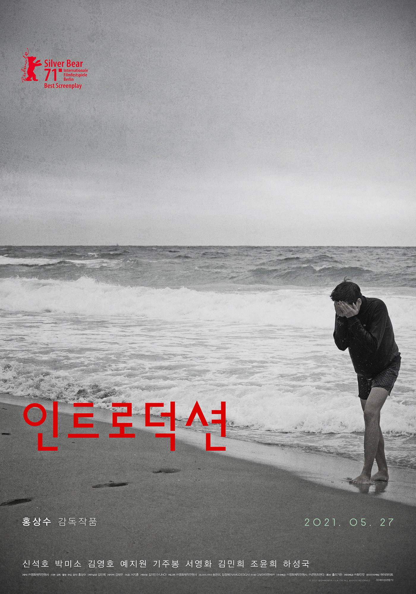

인트로덕션
주요정보
1. 아들은 아버지가 불러서 한의원을 찾았다 도착했을 때 아버지는 환자들 때문에 바빴고 아들은 하루 종일을 기다려야 했다 2. 딸은 독일로 패션디자인을 공부하러 갔다 어머니는 독일에 사는 옛 친구의 집에 딸이 묵게 하려고 같이 동행했다 친구 집에 묵게 된다면 방세를 절약할 수 있을 것이다 3. 아들은 어머니가 갑자기 불러서 동해안의 횟집으로 찾아갔다 어머니는 나이 든 남자배우와 함께 있었다 그 배우는 오랜 전에 아버지의 한의원을 찾아갔을 때 만난 적 있는 사람이었다